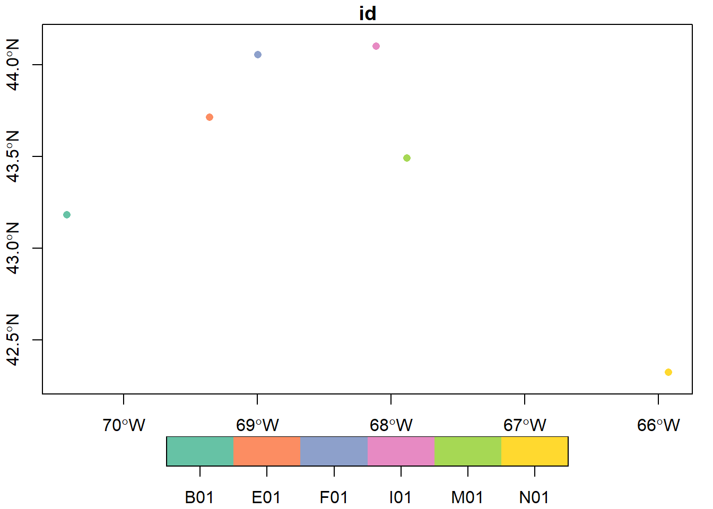
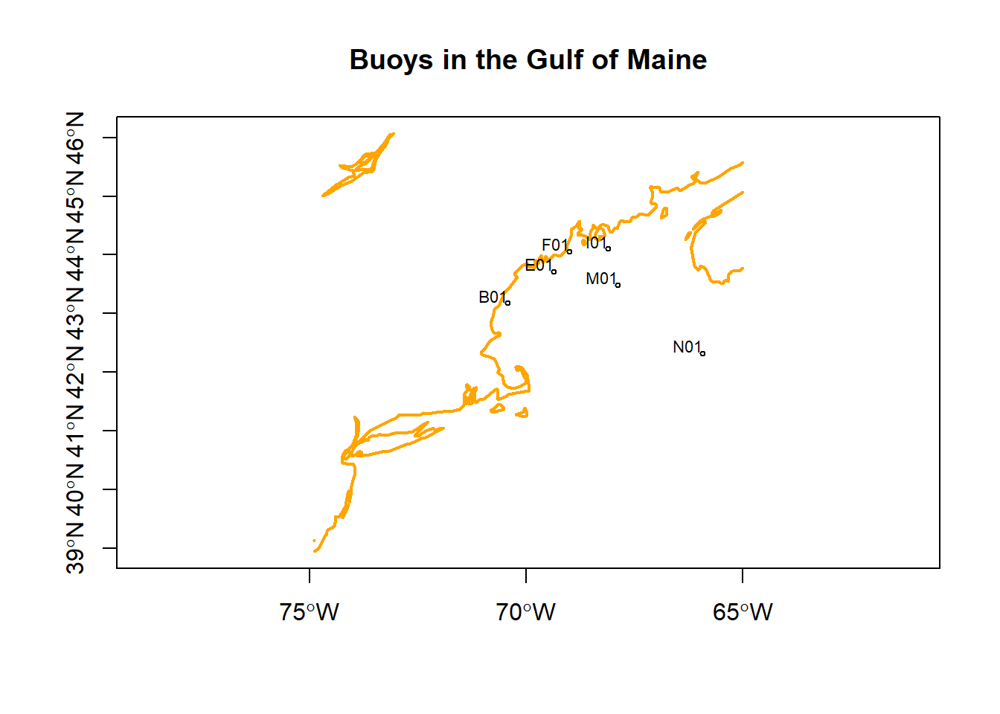
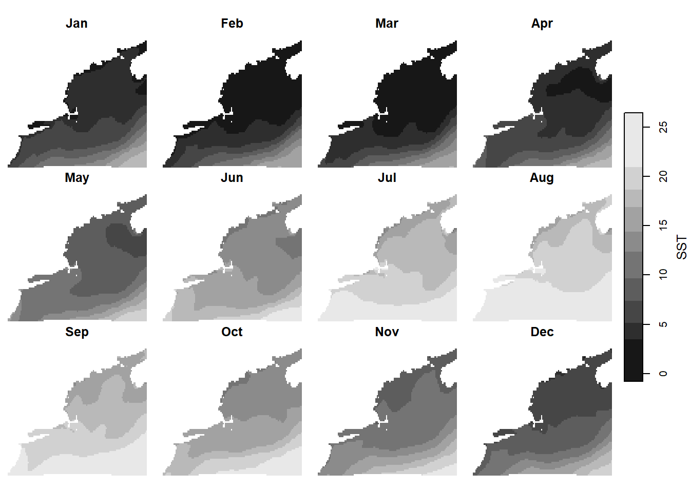
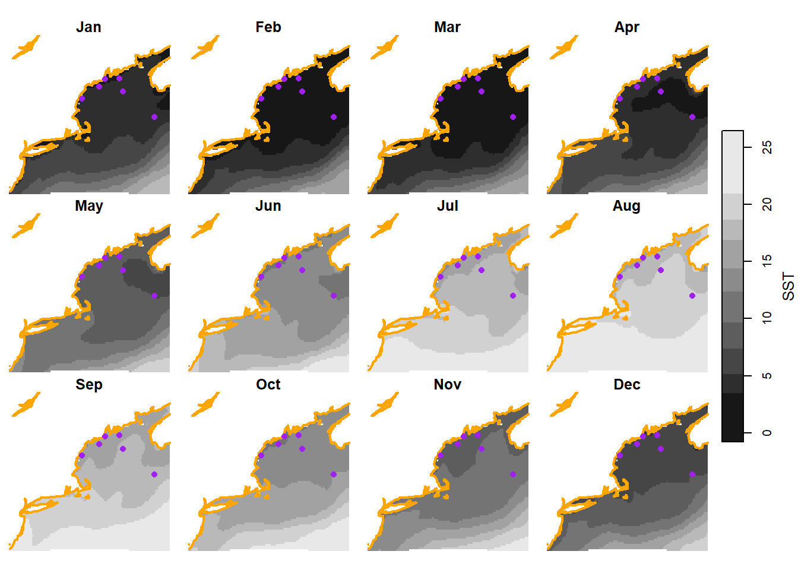

source("setup.R")Coding
1 Background
Coding is the practice of writing instructions for computers to follow; computers aren’t clever by themselves - they need to be told what to do. Most coding is text-based; people writing coding instructions into simple text documents. But some coding is graphical or visual. We shall be using text-based coding. We are going to use a free and open source general programming language called R. R programming language has its roots in statistics and science, but it really can be used for anything.
In the early days, coding was pretty barebones - all one needed was a text editor and access to the programming language - no frills there, no pretty images, no buttons to push, just typing. As time passed, volunteers added niceties to the text editor, like visualizing plots of data, buttons to save files, colorized text for the typed code, and other bells and whistles. These editors became know as graphical user interfaces (GUI for short.) GUIs keep getting easier and easier for people to use. We will use the GUI known as RStudio. It’s best to think of GUIs as wrappers around the core programming language; they are really nice and pretty, but they can’t do math. The programming language itself (which does do math!), evolved only as it needed to to fix bugs and make general improvements.
2 One of many available GUIs: RStudio
RStudio is a free GUI that wraps around two languages (R and Python, and soon to be more). When you invoke RStudio you’ll see that it is laid out as a multi-panel application that runs inside your browser. It will look something like this screenshot.
 There are many RStudio tutorials online. We encourage you to check them out.
There are many RStudio tutorials online. We encourage you to check them out.
3 Getting the software and data you will need
Use this wiki page to guide you through the process of installing the software you’ll need for this course, “the courseware”.
4 Coding with R
There are SO MANY TUTORIALS, some are great and some not so much. This one is a pretty good baby-steps approach and is quite up-to-date. You may find another that you prefer - let us know what works for you.
Take time to look at the tutorials in our wiki. Especially the one on working with tabular data.
There is so much to learning a programming language - it takes diving in to really get going. We’ll try to give you enough so that you can continue learning on your own.
A journey of a thousand miles begins with a single step; so let’s dive in.
4.1 Loading the necessary tools
For any coding project you will need to access a select number of tools, often stored on your computer in what is called a package library (it’s just a directory/folder really). When the package is loaded from the library, all of the functionality the author built in to that package is exposed for you to use in your project. We have created a single file that will both install (if needed) and load (if not already loaded) each of these packages. It’s easy to run.
First, make sure that you have loaded the project (File > Open Project) if you haven’t already. Then at the R console pane type the following…
After a few moments the command prompt will return to focus. Be sure to run that command at the beginning of every new R session or anytime you are adding new functionality.
Now we are ready to load some data into your R session.
4.2 Spatial data
Spatial data is any data that has been assigned to a location on a planet (or even between planets!); that means environmental data is mapped to locations on oblate spheroids (like Earth). The oblate spheroid shape presents interesting but challenging math to the data scientist. Modern spatial data is designed to make data science easier by handling all of the location information in a discrete and standardized manner. By discrete we mean that we don’t have to sweat the details.
4.2.1 Point data
Many spatial data sets come as point data - locations (longitude, latitude and maybe altitude/depth and/or time) with one or more measurements (temperature, cloudiness, probability of precipitation, abundance of fish, population density, etc) attached to that point. Here is an example of point data about long-term oceanographic monitoring buoys in the Gulf of Maine (“gom”). We’ll read the buoy data into a variable, buoy. Next we can print the result simply by typing the name (or you could type print(buoys) if you like all the extra typing.)
buoys = gom_buoys()
buoysSimple feature collection with 6 features and 3 fields
Geometry type: POINT
Dimension: XY
Bounding box: xmin: -70.4277 ymin: 42.3233 xmax: -65.9267 ymax: 44.10163
Geodetic CRS: WGS 84
# A tibble: 6 × 4
name longname id geometry
* <chr> <chr> <chr> <POINT [°]>
1 wms Western Maine Shelf B01 (-70.4277 43.18065)
2 cms Central Maine Shelf E01 (-69.3578 43.7148)
3 pb Penobscot Bay F01 (-68.99689 44.05495)
4 ems Eastern Maine Shelf I01 (-68.11359 44.10163)
5 jb Jordan Basin M01 (-67.88029 43.49041)
6 nec Northeast Channel N01 (-65.9267 42.3233)
Note
You can get the online documention for functions a couple of ways. You can type ?name_of_function, or or help(name_of_function). Try ?gom_buoys as an example.
Sometimes you need more - like seeing the function itself. You can always try typing the function name without any trailing parentheses.
gom_buoysfunction (form = c("table", "sf")[2])
{
x = structure(list(name = c("wms", "cms", "pb", "ems", "jb",
"nec"), longname = c("Western Maine Shelf", "Central Maine Shelf",
"Penobscot Bay", "Eastern Maine Shelf", "Jordan Basin",
"Northeast Channel"), id = c("B01", "E01", "F01", "I01",
"M01", "N01"), lon = c(-70.4277, -69.3578, -68.99689,
-68.11359, -67.88029, -65.9267), lat = c(43.18065, 43.7148,
44.05495, 44.10163, 43.49041, 42.3233)), row.names = c(NA,
-6L), class = c("tbl_df", "tbl", "data.frame"))
if (tolower(form[1]) == "sf")
x = sf::st_as_sf(x, coords = c("lon", "lat"), crs = 4326)
x
}
<bytecode: 0x00000229e4663c70>If that still doesn’t work, we highly recommend trying Rseek.org which is an R-language specific search engine.
So there are 6 buoys, each with an attached attribute “name”, “longname” and “id”, as well as the spatial location datain the “geometry” column (just longitude and latitude in this case). We can easily plot these using the “name” column as a color key. For more on plotting spatial data, see this wiki page.
plot(buoys['id'], axes = TRUE, pch = 16)
Well, that’s pretty, but without a shoreline it lacks context.
4.2.2 Linestrings and polygon data
Linestrings (open shapes) and polygons (closed shape) are much like point data, except that each geometry is linestring or polygon. We have a set of polygons/linestring that represent the coastline.
coast = read_coastline()
coastSimple feature collection with 14 features and 0 fields
Geometry type: MULTILINESTRING
Dimension: XY
Bounding box: xmin: -74.9 ymin: 38.95218 xmax: -65 ymax: 46.06477
Geodetic CRS: WGS 84
# A tibble: 14 × 1
geom
<MULTILINESTRING [°]>
1 ((-72.1019 41.01504, -72.15127 41.05146, -72.18389 41.04678, -72.28745 41.02…
2 ((-73.68745 45.56143, -73.85293 45.51572, -73.96055 45.44141, -73.92021 45.4…
3 ((-73.69531 45.5855, -73.57236 45.69448, -73.72466 45.67183, -73.85771 45.57…
4 ((-66.32412 44.25732, -66.27378 44.29229, -66.21035 44.39204, -66.25049 44.3…
5 ((-68.69077 44.24873, -68.70303 44.23198, -68.70171 44.18267, -68.66118 44.1…
6 ((-66.89707 44.62891, -66.7625 44.68179, -66.75337 44.70981, -66.74541 44.79…
7 ((-68.29941 44.45649, -68.34702 44.43037, -68.40947 44.36426, -68.41172 44.2…
8 ((-71.39307 41.46675, -71.36533 41.48525, -71.35449 41.54229, -71.36431 41.5…
9 ((-74.25049 39.52939, -74.1332 39.68076, -74.10674 39.74644, -74.25317 39.55…
10 ((-74.18818 40.6146, -74.23589 40.5187, -74.18813 40.52285, -74.13853 40.541…
11 ((-70.67373 41.44854, -70.7605 41.37358, -70.8292 41.35898, -70.7853 41.3274…
12 ((-71.34624 41.46938, -71.29092 41.4646, -71.24141 41.49194, -71.23203 41.65…
13 ((-70.0627 41.32847, -70.08662 41.31758, -70.23306 41.28633, -70.05508 41.24…
14 ((-74.9 39.14709, -74.89702 39.14546, -74.9 39.1329), (-74.9 38.95218, -74.7…In this case, each record of geometry is a “MULTILINESTRING”, which is a group of one or more linestrings. Note that no other variables are in this table - it’s just the geometry.
Let’s plot these geometries, and add the points on top.
plot(coast, col = "orange", lwd = 2, axes = TRUE, reset = FALSE,
main = "Buoys in the Gulf of Maine")
plot(st_geometry(buoys), pch = 1, cex = 0.5, add = TRUE)
text(st_geometry(buoys), labels = buoys$id, cex = 0.7, adj = c(1,-0.1))
4.2.3 Array data (aka raster data)
Often spatial data comes in grids, like regular arrays of pixels. These are great for all sorts of data like satellite images, bathymetry maps and environmental modeling data. We’ll be working with environmental modeling data which we call “Brickman data”. You can learn more about Brickman data in the wiki. We’ll be glossing over the details here, but there’s lots of detail in the wiki.
We’ll read in the database that tracks 82 Brickman data files, and then immediately filter out the rows that define the “PRESENT” scenario (where present means 1982–2013) and monthly climatology models.
db = brickman_database() |>
filter(scenario == "PRESENT", interval == "mon") # note the double '==', it's comparative
db# A tibble: 8 × 4
scenario year interval var
<chr> <chr> <chr> <chr>
1 PRESENT PRESENT mon MLD
2 PRESENT PRESENT mon Sbtm
3 PRESENT PRESENT mon SSS
4 PRESENT PRESENT mon SST
5 PRESENT PRESENT mon Tbtm
6 PRESENT PRESENT mon U
7 PRESENT PRESENT mon V
8 PRESENT PRESENT mon Xbtm If you are wondering about filtering a table, be sure to check out the wiki on tabular data to get started.
You might be wondering what that |> is doing. It is called a pipe, and it delivers the output of one function to the next function as the first parameter (aka argument). For example, brickman_database() produces a table, that table is immediately passed into filter() to choose rows that match our criteria.
Now that we have the database listing just the records we want, we pass it to the read_brickman() function.
current = read_brickman(db)
currentstars object with 3 dimensions and 9 attributes
attribute(s):
Min. 1st Qu. Median Mean 3rd Qu.
MLD 1.011275e+00 5.583339810 15.967359543 18.910421492 2.809953e+01
Sbtm 2.324167e+01 32.136343956 34.232215881 33.507147254 3.491243e+01
SSS 1.644333e+01 30.735633373 31.104771614 31.492407921 3.203519e+01
SST -7.826599e-01 6.434107542 12.359498501 12.151707840 1.763068e+01
Tbtm -2.676387e-01 3.595118523 6.110801697 6.122372065 7.521761e+00
U -2.121380e-01 -0.010892980 -0.002634738 -0.010139401 7.229637e-04
V -1.883337e-01 -0.010722862 -0.002858645 -0.008474233 9.565173e-04
Xbtm 3.275602e-06 0.001458065 0.003088348 0.008360344 7.256525e-03
depth 5.000000e+00 60.258880615 145.012619019 923.313763739 1.704049e+03
Max. NA's
MLD 1.066982e+02 59796
Sbtm 3.515742e+01 59796
SSS 3.559161e+01 59796
SST 2.643147e+01 59796
Tbtm 2.460999e+01 59796
U 7.469980e-02 59796
V 5.264002e-02 59796
Xbtm 1.899681e-01 59796
depth 4.964409e+03 59796
dimension(s):
from to offset delta refsys point values x/y
x 1 121 -74.93 0.08226 WGS 84 FALSE NULL [x]
y 1 89 46.08 -0.08226 WGS 84 FALSE NULL [y]
month 1 12 NA NA NA NA Jan,...,Dec This loads quite a complex set of arrays, but they have spatial information attached in the dimensions section. The x and y dimensions represent longitude and latitude respectively. The 3rd dimension, month, is time based.
Here we plot all 12 months of sea surface temperature, SST. Note the they all share the same color scale so that they are easy to compare.
plot(current['SST'])
Just as we are able to plot linestrings/polygons along side points, we can also plot these with arrays (rasters). To do this for one month (“Apr”) of one variable (“SSS”) we simply need to slice that data out of the current variable.
april_sss = current['SSS'] |>
slice("month", "Apr")
april_sssstars object with 2 dimensions and 1 attribute
attribute(s):
Min. 1st Qu. Median Mean 3rd Qu. Max. NA's
SSS 16.44333 30.8342 31.10334 31.4641 31.93447 35.59161 4983
dimension(s):
from to offset delta refsys point x/y
x 1 121 -74.93 0.08226 WGS 84 FALSE [x]
y 1 89 46.08 -0.08226 WGS 84 FALSE [y]Then it’s just plot, plot, plot.
plot(april_sss, axes = TRUE, reset = FALSE)
plot(st_geometry(coast), add = TRUE, col = "orange", lwd = 2)
plot(st_geometry(buoys), add = TRUE, pch = 16, col = "purple")We can plot ALL twelve months of a variable (“SST”) with the coast and points shown. There is one slight modification to be made since a single call to plot() actually gets invoked 12 times for this data. So where do we add in the buoys and coast? Fortunately, we can create what is called a “hook” function - who knows where the name hook came from? Once the hook function is defined, it will be applied to the each of the 12 subplots.
# a little function that gets called just after each sub-plot
# it simple adds the coast and buoy
add_coast_and_buoys = function(){
plot(st_geometry(coast), col = "orange", lwd = 2, add = TRUE)
plot(st_geometry(buoys), pch = 16, col = "purple", add = TRUE)
}
# here we call the plot, and tell R where to call `add_coast_and_buoys()` after
# each subplot is made
plot(current['SST'], hook = add_coast_and_buoys)
5 Coding Assignment
Use the menu option File > New File > R Script to create a blank file. Save the file (even though it is empty) in the “assignment” directory as “assignment_script_1.R”. Use this file to build a script that meets the following challenge. Note that the existing file, “assignment_script_0.R” is already there as an example.
Use the Brickman tutorial to extract data from the location of Buoy M01 for RCP4.5 2055. Make a plot of SST (y-axis) as a function of month (x-axis). Here’s one possible outcome.